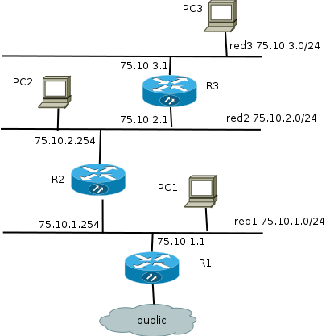

- Conceptos previos
- Utilizar routers desde Horizon. Puerta de enlace e interfaces
adicionales
- Utilizar redes y subredes desde Horizon.
- Utilizar routers, redes y subredes desde la línea de
comandos.
- Conceptos avanzados:
- Linux network namespaces
- OpenvSwitch
- Funcionamiento interno de OpenStack al trabajar con
neutron
Terminología
- Red: Red Dominio aislado de capa 2. Sería el
equivalente a una VLAN. Las redes externas solo pueden ser definidas por
el administrador.
- Subred: Bloque de direcciones IPv4 o IPv6 que se
asignan a las máquinas virtuales que se conectan a ella.
- Router: Dispositivo de capa 3 para conectar redes.
- Puerto: Puerto virtual de un switch o router.
- IP fija: Dirección IP con la que se crean una
instancia en una red y que se utiliza para comunicacion interna. La
dirección IP fija no cambia durante la vida de la instancia.
- IP flotante: Direccion IP asociada a una instancia en
un momento dado para poder acceder a ella desde fuera. Una IP flotante
puede asignarse a otra instancia diferente cuando se estime oportuno.
- Crear una red privada y una subred asociada
- Crear un router, conectarlo a la red externa y a la red anterior
- Crear una instancia en la nueva red
Instalación de python-neutronclient
Redes
#Listar redes
$ nova net-list
#Listar subredes
$ nova subnet-list
#Listar routers
$ nova router-list
# Establecer puerta de enlace de un router
$ neutron router-gateway-set ROUTER_ID EXTERNAL_NETWORK_ID
# Conectar un router a una red privada
$ neutron router-interface-add ROUTER_ID SUBNET_ID
Conceptos avanzados
- Open vSwitch
- Linux network namespaces
Demostración final
Creación automática de un escenario de red.

Vamos a crear este escenario de forma automática utilizando el script demo.sh